Features Guide
Jellyfin Enhanced bundles dozens of features into one convenient plugin. This guide covers all available features and how to use them.
Header Shortcuts
JE shortcuts share a single header row with Jellyfin's controls. Random gets first priority, and other enabled shortcuts stay visible while there is room. Tap More (•••) for the remaining shortcuts. As the window widens, shortcuts return to the header automatically.
The More menu uses labeled buttons. On short screens, previous/next buttons show the remaining actions without scrolling. Close it by choosing an action, clicking outside, or pressing Escape.
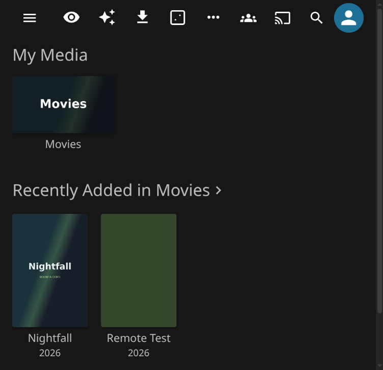
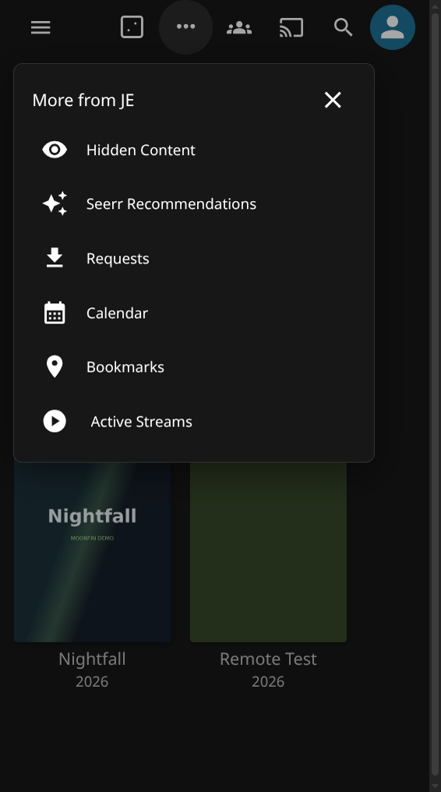
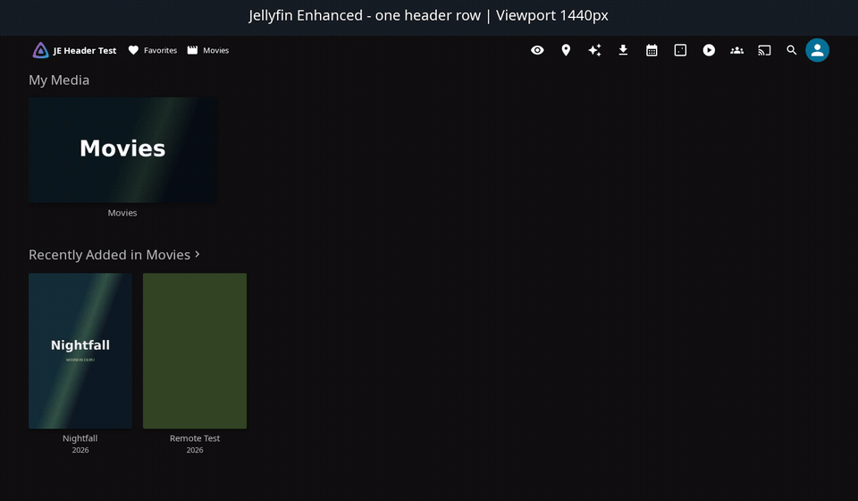
Random Button
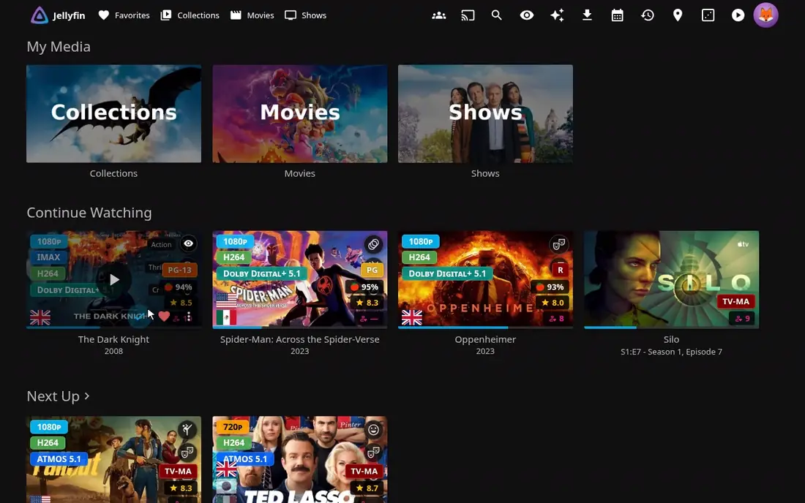
The dice button (or R) opens a random movie or show from your library. In the Enhanced panel's Random Button tab you can limit it to unwatched items, choose whether movies and/or shows are eligible, and narrow the pool under Random Source:
- Use the playlist or collection I'm viewing - on a playlist or collection page, the pick comes from that container's items (movies, shows or episodes) instead of the whole library.
- Everywhere else, pick from - pin one of your playlists or collections so every press draws from it, whatever page you are on.
If the chosen source has nothing eligible (empty, all watched, or deleted), the button falls back to the whole library and says so in a toast. The admin default for the "current playlist/collection" behaviour is under Random Button on the plugin configuration page.
Content Management
Hidden Content System
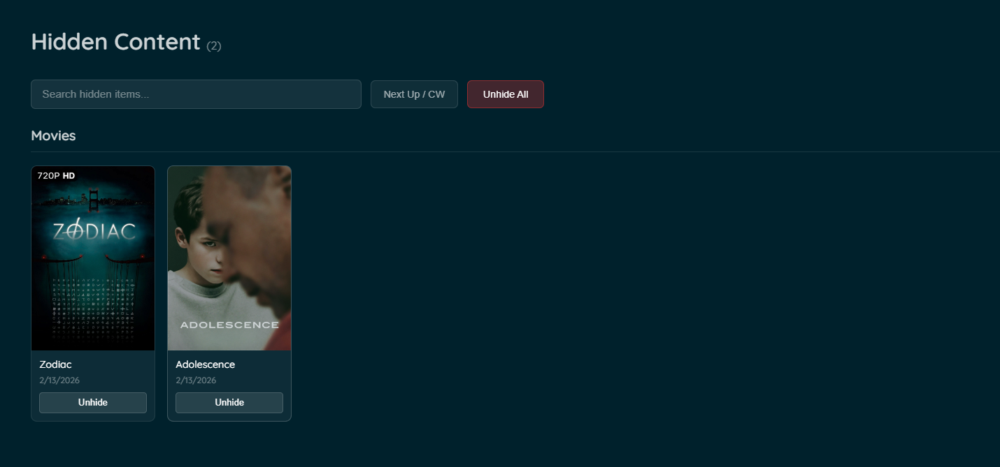
Per-user content hiding with server-side storage and granular filtering controls.
Features:
- Hide specific movies/series from all browsing surfaces
- Hidden state stored server-side per-user
- Survives browser/device changes
- Management panel with search and bulk operations
- Granular filter toggles for different surfaces
- Undo functionality with toast notifications
Surfaces with Filtering:
- Library views
- Discovery pages
- Search results
- Calendar view
- Next Up section
- Continue Watching section
- Recommendations
- Requests page
How to Hide Content:
- Navigate to any item detail page
- Click the hide button (visibility_off icon)
- Choose hide scope:
- Global - Hide everywhere
- Episode - Hide this episode only
- Show - Hide entire series
- Next Up - Hide from Next Up only
- Continue Watching - Hide from Continue Watching only
- Confirm the action
Management Panel:
Access via: - Enhanced panel → Settings → Hidden Content - Sidebar navigation (if enabled; Jellyfin 12: user profile menu instead) - Custom tab (if configured)
Management Features:
- View all hidden items
- Search hidden content
- Unhide individual items
- Unhide all items at once
- Group by series/movies
- Filter by scope
Configuration:
- Open Enhanced panel (press
?) - Go to Settings tab
- Find Hidden Content section
- Enable/disable the feature
- Configure filter toggles:
- Show hide buttons on Seerr items
- Show hide buttons in library views
- Show hide buttons on detail pages
- Filter library views
- Filter discovery pages
- Filter search results
- Filter calendar
- Filter Next Up
- Filter Continue Watching
- Filter recommendations
- Filter requests page
- Choose integration method:
- Plugin Pages (requires Plugin Pages plugin; Jellyfin 12: user profile menu instead of sidebar)
- Custom Tabs (requires Custom Tabs plugin)
Remove from Continue Watching / Next Up
A lightweight, non-destructive way to tidy the home screen. It adds a Remove option to an item's "⋯" action-sheet menu for items in the Continue Watching and Next Up rows, hiding the item from that row without touching your playback position or watched state.
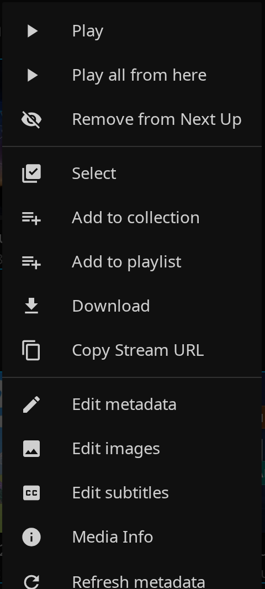
How It Works:
- Open an item's "⋯" menu in the Continue Watching or Next Up row
- Click Remove from Continue Watching / Remove from Next Up
- The item disappears from that row — your progress is left untouched
Highlights:
- Works on both Continue Watching and Next Up items, each removed from its own row
- Also appears in Jellyfin's long-press / multi-select menu, so touch devices with no "⋯" button can remove items. Selecting a mix of rows (and other items) only ever removes the Continue Watching / Next Up ones
- Removing several at once shows a confirmation listing each item and the row it will be removed from
- Hidden state is stored server-side, per-user, so it applies across all your devices and survives reloads
- Undoable: removed items appear in the Hidden Content management page with an "Add back" button, and simply resuming a hidden item unhides it automatically
- Works on its own — it does not require the full Hidden Content feature to be enabled
- Also applies to home screens rendered by the Home Screen Sections plugin, including its combined Continue Watching / Next Up row
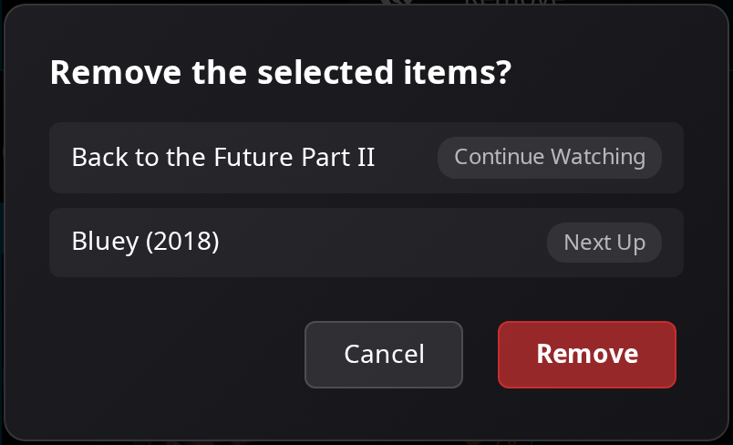
Enable it:
- Open the Enhanced panel (press
?) → Settings → Add Remove from Continue Watching & Next Up Buttons
Admin: Other Users' Hidden Content
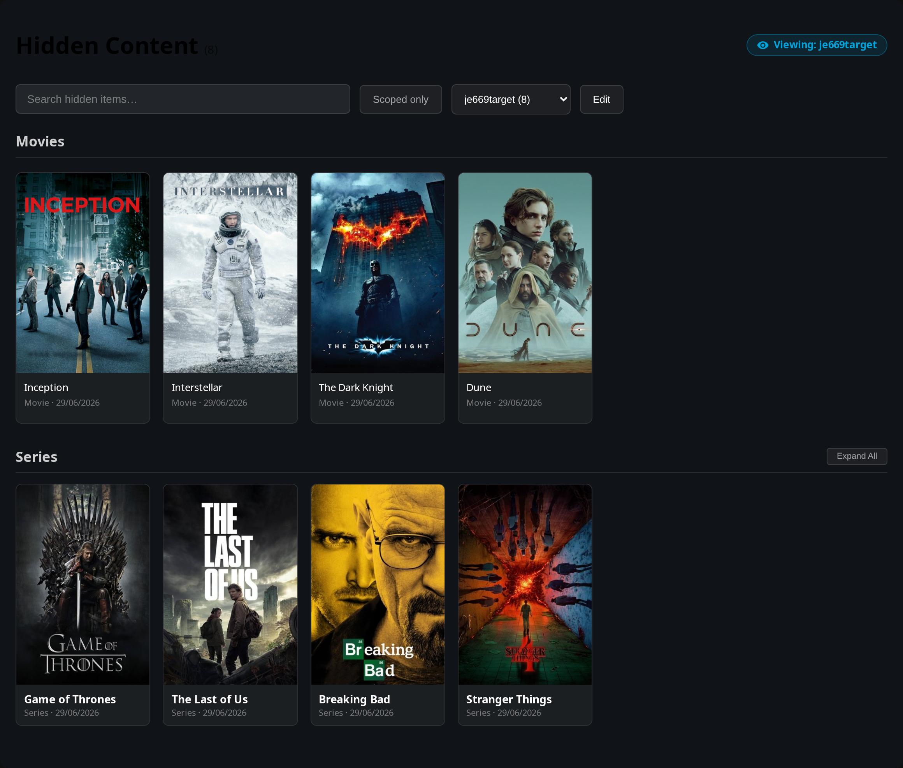
Administrators can review (and optionally manage) what other users have hidden, from the same Hidden Content page. Admin-only and enforced server-side; regular users never see it.
Features:
- User-filter dropdown to switch between My hidden content and any user who has hidden something
- Another user's list is read-only by default, with a "Viewing: OtherUser" badge
- An Edit toggle (when enabled) to unhide items for that user, or add new ones
- Add items by searching the library and Seerr, so you can hide titles that aren't in the library yet
- An admin never overwrites an item the user hid themselves
Configuration:
In Dashboard → Plugins → Jellyfin Enhanced → Pages → Hidden Content → Admin Controls, the Let admins view and manage other users' hidden content toggle enables the whole feature (the user-filter dropdown and the Edit toggle). On by default; turn it off to keep hidden lists private.
Playback & Controls
Advanced Keyboard Shortcuts
Comprehensive hotkeys for navigation, playback control, and more.
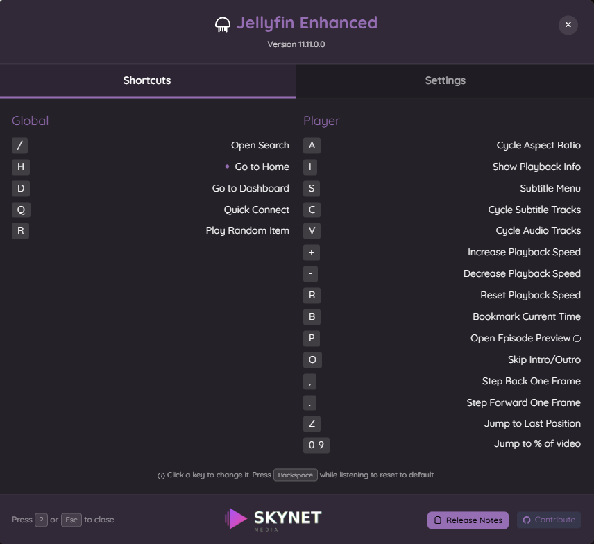
Default Shortcuts:
Global:
/- Open SearchShift+H- Go to HomeD- Go to DashboardQ- Quick ConnectR- Play Random Item
Player:
A- Cycle Aspect RatioI- Show Playback InfoS- Subtitle MenuC- Cycle Subtitle TracksV- Cycle Audio Tracks+- Increase Playback Speed-- Decrease Playback SpeedR- Reset Playback SpeedB- Bookmark Current TimeP- Open Episode PreviewO- Skip Intro/Outro
Customization:
- Press
?to open the Enhanced panel - Go to Shortcuts tab
- Click on any key to set a custom shortcut
- Changes save automatically per user
Smart Bookmarks
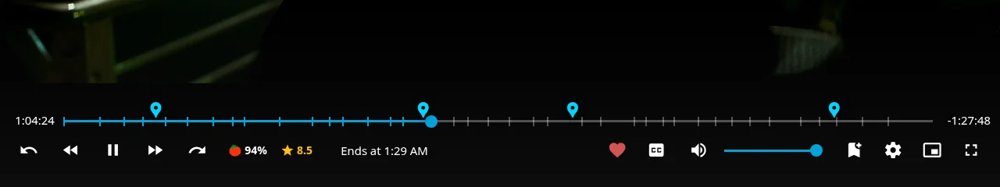
Save timestamps and jump to specific moments with visual timeline markers.
Features:
- Create bookmarks during playback with
Bkey - Visual markers on video timeline
- Add custom labels to bookmarks
- Sync bookmarks across duplicate items (same TMDB/TVDB ID)
- Manage all bookmarks from Custom Tabs interface
- Export/import bookmark data
Usage:
- While watching, press
Bat any moment - Add an optional label (e.g., "Epic scene")
- Bookmark appears as marker on timeline
- Click marker to jump to that timestamp
Bookmark Management:
- Access via Custom Tabs plugin
- View all bookmarks across library
- Clean up orphaned bookmarks
- Detect and merge duplicates
- Adjust time offsets for synced bookmarks
Custom Pause Screen
Beautiful overlay with media info when you pause a video.

Displays:
- Media title and logo
- Year, rating, runtime
- Plot/description
- Current progress with time remaining
- Spinning disc animation
- Blurred backdrop
Smart Playback
Intelligent playback features for better viewing experience.
Features:
- Auto-pause - Pause when switching browser tabs
- Auto-resume - Resume when returning to tab
- Auto-skip intros/outros - Seamless binge-watching, driven by Jellyfin's own media segments (requires a segment provider such as Intro Skipper)
- Playback speed control - Adjust speed with keyboard shortcuts
- Auto Picture-in-Picture - Enter PiP mode when switching tabs
Configuration: Enable/disable in Enhanced panel → Settings tab
How auto-skip works:
Auto-skip reads the media segments Jellyfin already stores for the item (the same data the native Skip Intro button uses) and seeks straight to the segment's end boundary.
- It skips to the exact end of the intro/outro segment, honouring the offsets the segment provider detected.
- It works in every language — nothing depends on the skip button's English label.
- It works even with Jellyfin's own media-segment action set to None, where no skip button ever appears.
- If you seek back into an intro you just skipped, it stays put instead of yanking you forward again. Rewind to before the segment and play through it and it skips again, matching Jellyfin's native behaviour.
Note
Recap, Preview and Commercial segments are left to Jellyfin's own per-segment-type actions (Playback settings), which can prompt or skip them independently. The Enhanced toggles only cover intros and outros. Jellyfin stores media segments per item, not per version, so an item with multiple versions whose timings differ may see boundaries taken from the primary version.
Customizable Subtitles
Fine-tune subtitle appearance with presets and custom colors.
Presets:
- Multiple font families
- Size options (small, medium, large, extra large)
- Background opacity
- Text effect: Auto, None, Shadow, Outline or Outline + Shadow
- Position adjustments
Custom Colors:
- User-configurable text color with alpha support
- User-configurable background color with alpha support
- Live preview in settings
- Per-user customization
Text effect:
- Auto (default) keeps the long-standing behaviour: a soft shadow when the background is transparent, nothing when a background box is shown.
- None, Shadow, Outline and Outline + Shadow apply that effect regardless of background. The outline is a black stroke that scales with the font size.
- Admins can pick the default for new users with Default Subtitle Text Effect in the plugin settings.
- The text effect takes the place of Jellyfin's own Drop shadow subtitle setting, so the two never stack. To use Jellyfin's drop shadow instead, turn on Disable Custom Subtitle Styles.
Usage:
- Open Enhanced panel → Settings
- Find Subtitle Presets section
- Select your preferred preset options
- Or use Custom Colors section:
- Choose text color
- Adjust text alpha
- Choose background color
- Adjust background alpha
- Preview changes live
- Changes apply immediately
How it applies
Jellyfin draws text subtitles in one of two ways, decided by its Subtitle styling setting (in Jellyfin User Preferences → Subtitles). Jellyfin Enhanced styles both.
| Jellyfin Subtitle styling | What Jellyfin uses | What Jellyfin Enhanced applies |
|---|---|---|
| Custom | Its own subtitle element | Text color, background, size, font, text effect and position |
| Native | The browser's built-in captions | Text color, background, size, font and text effect. Position is not available |
| Auto | Custom on Firefox, Safari (including the iOS app), Edge and TV platforms (Tizen 5+, webOS, PS4). Native on Chrome | The same as whichever mode Auto picks |
- The position grid only takes effect in Custom mode, because the browser's native captions cannot be repositioned. The Enhanced panel shows a note when Subtitle styling is not set to Custom.
- A secondary subtitle track is styled the same way as the primary one. Both share one position and stay stacked without overlapping. Near the top of the screen, two lines take more height, so keep the position below the top edge.
- Styling behaves the same on Jellyfin 10.11 and 12. The only difference is how VobSub subtitles are handled, described below.
Subtitle formats that cannot be styled
Jellyfin Enhanced can only style subtitles that Jellyfin draws as text. These formats are drawn as images or by Jellyfin's own renderer, so their look comes from the subtitle track itself and Jellyfin Enhanced cannot change it. Jellyfin's own Subtitle Appearance settings do not apply to them either:
| Format | Why it cannot be styled |
|---|---|
| ASS / SSA | Jellyfin renders these on a canvas using the fonts, colors, size and position written in the subtitle file |
| PGS (Blu-ray) | Bitmap images. There is no text to restyle |
| VobSub / DVD subtitles | Bitmap images. Jellyfin 12 draws them in the browser; Jellyfin 10.11 has the server burn them into the video |
| Burned-in subtitles | Drawn into the video by the server (for example when a transcode is needed), so they cannot be changed in the browser |
If styling does not apply, check which subtitle track is playing. Choosing a text-based track (for example SRT) restores full styling. The Enhanced panel shows a warning when the current video uses one of these formats.
Turning it off
- For yourself: in the Enhanced panel → Settings, enable Disable Custom Subtitle Styles, then reload the page. Jellyfin Enhanced then leaves subtitles alone and your Jellyfin User Preferences → Subtitles settings apply unchanged. Jellyfin Enhanced never changes those saved settings. It only styles the subtitles while a video plays.
- For all users: in the plugin settings, enable Disable Custom Subtitle Styles by default, save, then use Overwrite everyone's personal settings in Quick Actions. The default only applies when a user's settings are first created, so users who already have saved settings keep their own value until you overwrite them.
Discovery & Integration
Seerr Search Integration
Search, request, and discover media directly from Jellyfin's search interface.

Features:
- Search Seerr from Jellyfin search bar
- Further result pages load ahead as you scroll the row (see Seamless Scrolling)
- Results respect each user's parental controls (see Parental Ratings)
- Request movies and TV shows
- View request status (pending, approved, available)
- Auto-add requested media to watchlist
- Sync Seerr watchlist to Jellyfin
Setup:
- Open plugin settings → Seerr tab
- Check "Show Seerr Results in Search"
- Enter Seerr URL(s) (one per line)
- Enter Seerr API Key (from Seerr Settings → General)
- Click "Test Connection"
- Enable optional features:
- Add Requested Media to Watchlist
- Sync Seerr Watchlist to Jellyfin
- Click Save
Requirements:
- Seerr instance with API access
- "Enable Jellyfin Sign-In" enabled in Seerr
- Jellyfin users imported into Seerr

Icon States:
| Icon | State | Description |
|---|---|---|
| Active | Seerr is successfully connected, and the current Jellyfin user is correctly linked to a Seerr user. Results from Seerr will load along with Jellyfin and requests can be made. |
|
| User Not Found | Seerr is successfully connected, but the current Jellyfin user is not linked to a Seerr account. Ensure the user has been imported into Seerr from Jellyfin. Results will not load. |
|
| Offline | The plugin could not connect to any of the configured Seerr URLs. Check your plugin settings and ensure Seerr is running and accessible. Results will not load. |
Seerr Item Details
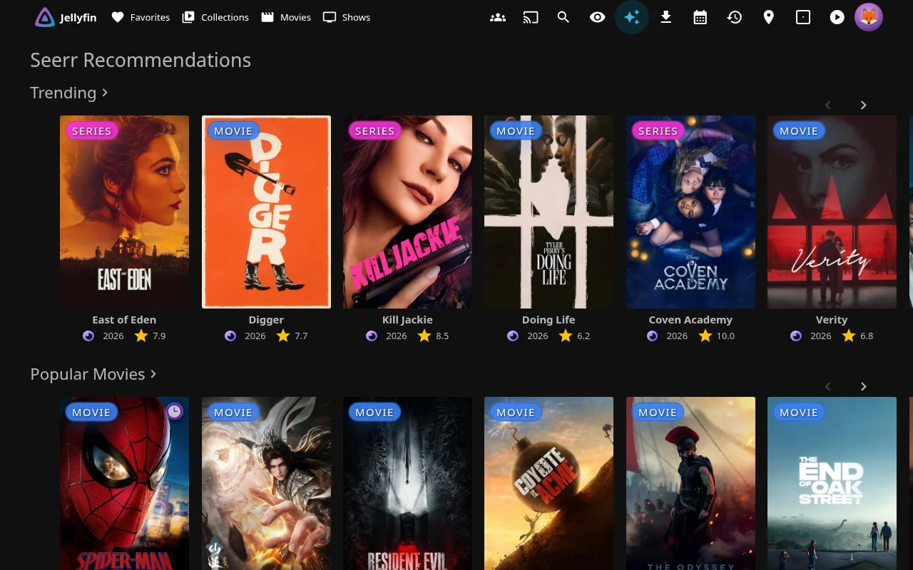
View recommendations and similar items on detail pages.
Features:
- Recommended items section
- Similar items section
- Request directly from recommendations
- Exclude items already in library
- Real-time request status indicators
- Support for 4K requests
- TV season selection
Setup:
- Configure Seerr integration (see above)
- Check "Show Seerr Recommendations and Similar items"
- Optional: Enable "Exclude already in library items"
- Click Save
Discovery Pages:
- Genre-based discovery
- Network-based discovery
- Person-based discovery (actors, directors)
- Tag-based discovery
- All with TV/Movies/All filtering
.arr Links Integration
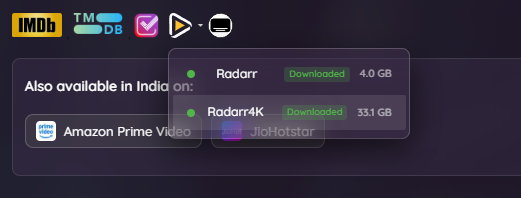
Quick access to Sonarr, Radarr, and Bazarr (admin only).
Features:
- Direct links to item pages in Sonarr/Radarr
- Bazarr subtitle management links
- Display *arr tags as clickable links
- Filter and customize tag display
Streaming Provider Lookup
See where else your media is available to stream.
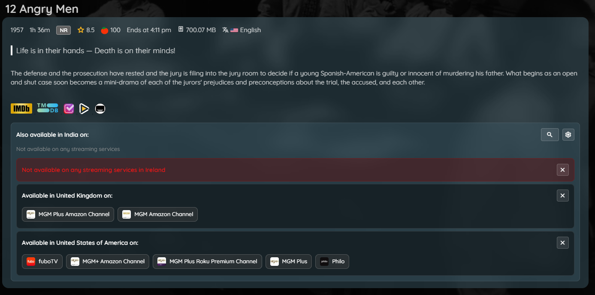
Features:
- Multi-region support
- Buy, rent, and stream options
- Provider logos and links
- Powered by TMDB data
Usage:
- Enable in Enhanced panel → Settings
- Select your region
- View providers on item detail pages
User Reviews
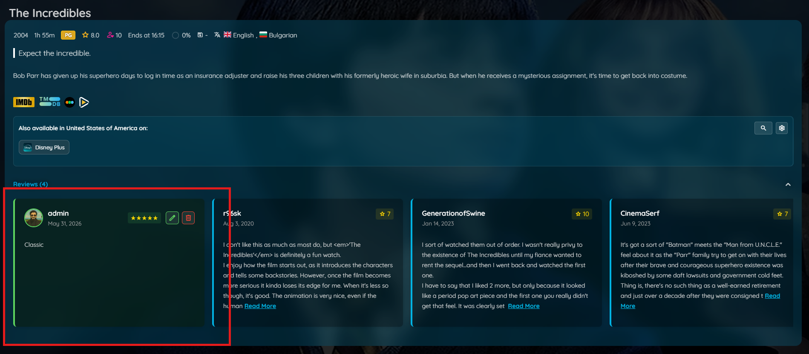
Jellyfin users can write their own reviews for movies, series, seasons, and episodes. Reviews are stored server-side and visible to all users.
Features:
- Write a review with a star rating (1-5) and optional text, or just a rating with no text
- Reviews appear in a dedicated "Reviews" section on item detail pages, listed before TMDB reviews
- Edit or delete your own review at any time
- Average user rating chip displayed next to TMDB/RT ratings in the item media info bar
- Average user rating also shown as a poster tag (
person_hearticon) on library cards when rating tags are enabled - Admin moderation — admins can delete any user's review
- Optional: star ratings given in a review can also be saved as the user's Jellyfin rating on the item, so scrobblers and Letterboxd/Trakt-style sync tools that read Jellyfin user data pick them up
How to write a review:
- Open any movie, series, season, or episode detail page
- Scroll to the Reviews section
- Click Add Review
- Select a star rating (optional) and write your review text (optional — a rating alone is valid)
- Click the save icon
Setup (admin):
- Go to Dashboard → Plugins → Jellyfin Enhanced
- Navigate to the Enhanced Settings tab
- Enable "Show User Reviews"
- Optionally enable "Show User Rating on Posters" to display the average rating as a poster tag
- Optionally disable "Show User Rating Dash" to hide the
—placeholder on posters when no ratings exist yet - Optionally enable "Also save review star ratings as the user's Jellyfin rating" to mirror each review's 1-5 star rating (scaled to Jellyfin's 0-10) onto the user's Jellyfin rating for that movie or series. Off by default because it overwrites a rating the user may have set elsewhere. Deleting a review (or removing its stars) clears the Jellyfin rating only if it still matches the review's rating, so a rating changed elsewhere in the meantime is kept. Season/episode reviews are not mirrored
- Click Save
Note
The poster tag requires the user to also have Rating Tags enabled in the Enhanced panel (Settings tab).
Admin moderation:
Admins see a delete button on all reviews, not just their own. A confirmation dialog is shown before deletion. The action is logged and the section refreshes automatically.
Activity Feed

Shows recently watched, favorited, and reviewed titles across the server, so users can see what others are up to. Each viewer only ever sees activity for items they themselves have library access to - someone else's activity on a library you can't see never appears.
Features:
- Recently watched (full playback completions)
- Recently favorited
- Recently reviewed (see User Reviews above)
- Optional live "who's watching now" section, powered by the same data as the Active Streams Widget
- Per-viewer filtering: hidden or disabled review authors are excluded the same way they are in the Reviews section
- Reachable as a sidebar page (Plugin Pages; Jellyfin 12: user profile menu instead), a home-page tab (native or Custom Tabs), or both
Setup:
- Go to Dashboard → Plugins → Jellyfin Enhanced
- Navigate to the Extras tab
- Enable "Enable Activity Feed"
- Choose what to show: Show recently watched, Show recently favorited, Show recently reviewed, Show Active Streams section
- Choose how it's reachable - pick one or more:
- Add Activity as a native Home tab - no external plugin needed
- Use Plugin Pages - adds a sidebar link (requires Plugin Pages; Jellyfin 12: user profile menu instead)
- Use Custom Tabs - adds a home-page tab via Custom Tabs instead of the native one
- Click Save
Note
Turning the feature off does not delete any recorded activity - it just stops recording and stops showing the feed. Turning it back on picks up from where it left off.
TMDB Reviews
Display user reviews from TMDB on item pages.
Features:
- Full review text
- Author information
- Rating scores
- Review dates
- Expandable/collapsible reviews
Setup: Enable "Show TMDB Reviews" in Dashboard → Plugins → Jellyfin Enhanced → Elsewhere Settings tab.
See Elsewhere Features for full details.
Visual Enhancements
Quality Tags
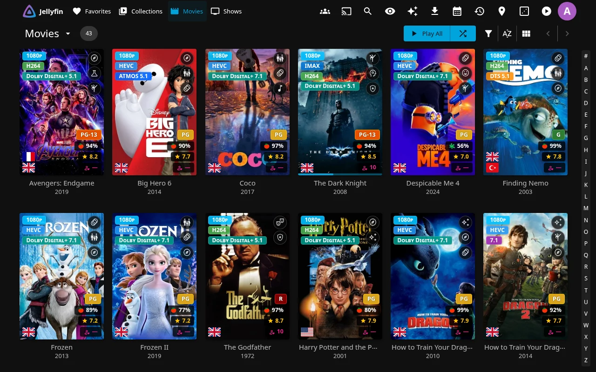
Display quality information (4K, HDR, Atmos) directly on posters.
Supported Tags:
- Resolution: 8K, 4K, 1080p, 720p, 480p, LOW-RES
- Video Format: AV1, HEVC, H265, VP9, H264
- Video Features: HDR, Dolby Vision, HDR10+, 3D
- Audio: ATMOS, DTS-X, TRUEHD, DTS, Dolby Digital+, 7.1, 5.1
- Media Stubs: BluRay, HD DVD, DVD, VHS, HDTV, Physical (for physical media files)
Preferred audio language:
By default the sound tag describes the best audio track in the file. Set a preferred language (admin default under Media Tags, or per user in the Enhanced panel's Quality Tags options) and it describes the best track in that language instead — a film whose English track is Atmos but whose German dub is plain AC3 reads AC3 for a German-preferring user. Titles with no audio in the language fall back to their best track. Admins can also let the tag follow each user's Jellyfin audio language preference, and users can pick "My Jellyfin audio language" themselves.
Genre Tags
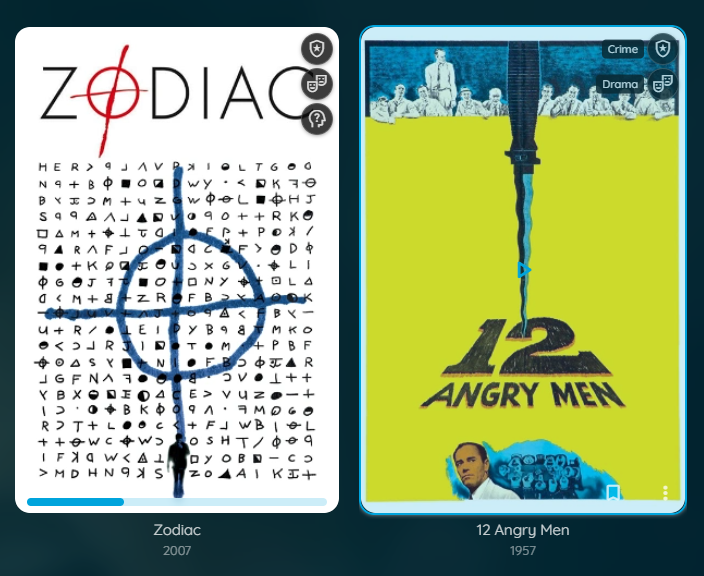
Identify genres with themed icons on posters.
Features:
- Material Design icons for each genre
- Circular badges that expand on hover
- Show up to 3 genres per item
- Customizable position
Language Tags
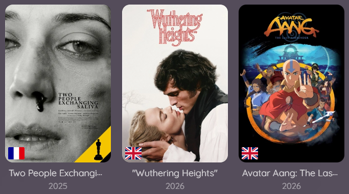
Display available audio languages as country flags on posters.
Features:
- Country flag icons from flagcdn.com
- Show up to 3 unique languages
- Positioned bottom-left by default
- Also displays on item detail pages
- Series and season cards show every language found across their episodes.
A language that is missing from some episodes (a dub that only covers part
of the show) is drawn dimmed with a dashed outline, and its flag's title/alt
text adds "not on all episodes"; a plain flag means every episode has that
audio. Full-series languages are listed first. Specials don't count against
a series' full languages, and tracks without a language tag are ignored.
Differently tagged copies of one language (
eng/en,fre/fr-FR) count as the same dub; two regional variants that sit side by side in one episode (es-419andes-ES) are judged separately. Requires the server-side tag cache (on by default); in the legacy per-page mode the card reflects one representative episode as before - Regional variants get their own flag when the audio track is explicitly
tagged with a region:
pt-BRshows the Brazilian flag whilept/pt-PTkeep the Portuguese one,es-419/es-MX(Latin-American Spanish) show the Mexican flag,zh-Hantmaps to the Taiwanese flag, and so on. Media tagged with just a base language (pt,es,zh) keeps its default flag — a regional variant is never guessed
Tagging matters
Region detection relies on the language tag stored in your media file
(pt-BR, es-MX, pob…). Tracks tagged with only a base language code
can't be told apart, so they show the language's default flag.
Audio Language Links
Audio languages on item detail pages link to Jellyfin's list of items with that language.
Features:
- Backed by Jellyfin tags written by the Sync Audio Language Tags to Jellyfin scheduled task (movies and series)
- A regional track gets two tags: a base tag (
JE Language: English) and a regional tag (JE Language: English (United States)) - A regional language links to its regional tag; a base language links to the base tag
- Series use the union of languages across their episodes
- A language without a matching tag on the item is shown as plain text
- Tags for languages an item no longer has are removed on each sync
Rating Tags
Show TMDB and Rotten Tomatoes ratings on posters and in player.

Features:
- TMDB star ratings
- Rotten Tomatoes critic scores (fresh/rotten icons)
- Stacked vertically on posters
- Optional OSD display during playback
- Color-coded by rating value
- Choose where they appear, per item type (movies, series, seasons, episodes) and per home row (Continue Watching, Next Up). Untick Episodes to keep ratings off every episode card, including Next Up and Continue Watching; untick a row to hide them only in that row (on the home screen, and the Next Up shelf on a series page). Rating chips and your own review chip are hidden together on an excluded card. Admins set the defaults; each user can change them under Show Rating Tags in the Enhanced panel.
Age Rating Tags
Show the item's parental / age rating (PG-13, R, TV-MA, FSK 12, BBFC 15, ...) as a badge on posters.
Features:
- Reads the rating Jellyfin already has for the item (no extra lookups)
- Episodes and seasons fall back to their series' rating
- Colour-coded per rating board, using the same colour table as Colored Ratings
- Customizable position; defaults to the bottom-right corner and stacks with Rating Tags when both share a corner
- Off by default — enable it per user in the Enhanced panel (Settings tab), or set the admin default under Display → Media Tags
Note
Spoiler Guard keeps the badge: a series' or movie's age rating reveals nothing about the plot, and the details page shows it regardless. While Spoiler Guard is hiding ratings, unwatched episodes (and unstarted seasons) of a guarded series show the series' rating rather than their own, since an episode rated higher than its show can hint at what happens in it.
Native Poster Tags (Experimental)
Show your Media Tags in native Jellyfin apps that can't run Jellyfin Enhanced's web overlays, such as the official Android TV app. The server draws each user's tags into the poster images it sends to those apps, so they appear without any change to the app.
What gets drawn:
- Quality, genre, language, rating (with the user-review chip) and age rating tags, matching the web look as closely as a static image allows
- Movies, series, seasons, episodes, collections and videos, on their primary images (posters, and episode thumbnails in landscape layout)
- Each user's own tag choices, corners, quality categories and order, preferred audio language, priority languages and rating item-type scope, the same settings the web overlays use
- Spoiler Guard is respected: guarded items use the same spoiler-safe tag data as the web, and tags are drawn on top of the blurred image
Which apps:
- Native apps, for example Jellyfin for Android TV, Jellyfin for Tizen, Swiftfin, Findroid and Streamyfin
- Apps that already run Jellyfin Enhanced's web overlays keep the original posters so tags are never drawn twice: Jellyfin Web, Jellyfin Media Player, Jellyfin Desktop, Jellyfin for WebOS and Jellyfin for Android (the phone app). Admins can add more names in the settings
- An app that builds poster addresses without Jellyfin's image tag, or asks Jellyfin to draw its own watched or unplayed-count indicator into the image, keeps the original posters
Setup:
- Go to Dashboard → Plugins → Jellyfin Enhanced → Display → Media Tags
- Turn on Enable Native Poster Tags (Experimental) at the bottom
- Click Save
- Every user now gets their tags in native apps; anyone who doesn't want them can turn off Show Tags in Native Clients in the Enhanced panel's UI Settings
- Reopen the library, or restart the app, on the TV or phone
See Enhanced Settings - Native Poster Tags for every setting.
Limitations:
- Static layout. There is no hover, so hover-only details (genre names, Hide Tags on Hover) don't apply. Tag size follows the poster's width rather than the size the app displays it at
- No row or page context. The server only sees an image request, not where it is shown. The Continue Watching and Next Up rating scopes are not applied (the per-item-type scopes are), Disable Tags on Search Page has no effect, and the tags also appear wherever the app reuses the poster, such as its details page
- Posters are re-downloaded after a change. Turning the feature on, changing your tag settings, or a change to an item's tag data gives its posters a new address, so the app downloads them again
- First-view CPU cost. Each poster is drawn the first time it is viewed at a given size, which uses some server CPU; a big home screen on a fresh cache can mean a short burst of work. Drawn posters are cached in memory and in Jellyfin's cache folder
- Apps may need a refresh. Native apps cache poster addresses, so a change shows after reopening the library or restarting the app
- With Server-Side Tag Cache off, changed tag data can take up to an hour to show on a poster an app has already downloaded
- Original artwork files are never modified
People Tags
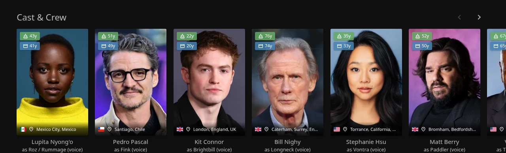
Display age and birthplace information for cast members.
Features:
- Current age or age at death
- Age at item release
- Birthplace with country flag
- Deceased indicator (grayscale + cross)
- Caching for performance
Displays:
- Age chips (top-left of cast cards)
- Birthplace banner (bottom of cast cards)
- Deceased styling (grayscale filter)
Awards
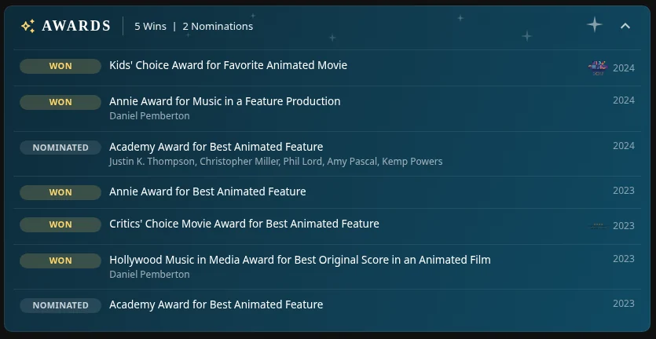
Show award wins and nominations on item detail pages and person pages, sourced from Wikidata by TMDB id.
Features:
- Expandable banner below the Reviews section, showing total wins and nominations
- Full per-category breakdown when expanded: award name, Won/Nominated, year, and who it went to (or which title it was for, on a person's page)
- Recognized award-body icons (Oscars, Golden Globes, BAFTA, Emmys, SAG, Critics' Choice, National Board of Review, Saturn Award, Kids' Choice Awards, Toronto Film Critics, Cannes/Palme d'Or) shown next to each entry — anything not in that list still shows correctly, just without a logo
- Works on movies, TV shows, and person (cast/crew) pages — a person's page shows their full career award history, not just one title's
- No API key required — Wikidata's public data endpoint is free and keyless
Setup:
- Go to Dashboard → Plugins → Jellyfin Enhanced
- Navigate to the Display tab
- Enable "Show Awards Banner"
- Click Save
Note
Coverage depends entirely on what's recorded in Wikidata for that title or person — very well-covered for major releases and prestige awards, thinner for obscure titles or lesser-known award bodies. A title/person with no award data on Wikidata simply shows no banner.
Personal Scripts
These are optional scripts from the developer's personal collection.
📡 Active Streams Widget
A live stream counter in the Jellyfin header that shows who is currently playing and what they're watching.
Features:
- Stream counter icon in the header, colour-coded by state
- Click to open a panel listing every active session
- Poster thumbnails and user avatars per session
- Direct Play vs Transcoding badges with codec and bitrate details
- Playback progress bar with current position and total duration
- Playing / Paused state badge per session
- Clickable title links to the item detail page
- Admin-only broadcast button to message all active sessions
- Polls every 15 seconds; updates automatically while the panel is open
Header icon states:
| Icon | State |
|---|---|
play_circle (no badge) |
No active streams |
person + badge 1 |
One stream playing |
group + badge count |
Multiple streams |
pause_circle + badge count |
All streams paused |
| Red icon | Failed to fetch sessions |
Session card details:
Each card in the panel shows:
- Poster thumbnail (series poster for episodes, movie poster for films)
- Title and episode info (S01E01 · Episode Name)
- Playing / Paused badge
- Progress bar with elapsed / total time
- Playback badges:
Direct PlayorTranscoding, video codec, bitrate, resolution, framerate - Transcode reason (e.g., "Video Codec Not Supported") when applicable
- User avatar, username, client name, and device name
- IP address (admins only)
Broadcast (admin only):
Admins see a megaphone icon (📣) in the panel header. Click it to open the broadcast form:
| Field | Required | Notes |
|---|---|---|
| Title | No | May not display on all clients (web UI typically ignores it) |
| Message | Yes | Always visible; sent to every active session |
| Timeout | Yes | Seconds before the notification auto-dismisses (default: 10) |
Setup:
- Go to Dashboard → Plugins → Jellyfin Enhanced
- Navigate to the Other Settings tab
- Enable "Active Streams Widget"
- Optional: Enable "Show to all users" to make the widget visible to non-admin users
Note
By default the widget is admin-only. Non-admin users see a read-only view (no broadcast button, no IP addresses) when "Show to all users" is enabled.
🎨 Colored Activity Icons
Replace default activity icons with Material Design icons.

Features:
- Custom colors for each activity type
- Material Design icon set
- Better visual distinction
Configuration:
Enable in Enhanced panel → Settings → Extras
🎪 Colored Ratings
Color-coded backgrounds for ratings on detail pages.
Features:
- Different colors per rating type
- Value-based color gradients
- Supports TMDB, IMDb, Rotten Tomatoes
Configuration: Enable in Enhanced panel → Settings → Extras
🖼️ Login Image Display
Show user profile images on manual login page.

Features:
- Display user avatars
- Cleaner login interface
- Automatic fallback to text
Configuration:
Enable in Enhanced panel → Settings → Extras
🧩 Plugin Icons
Replace default plugin icons with Material Design icons.

Features:
- Custom icons for popular plugins
- Add custom config page links
- Improved dashboard aesthetics
Configuration: Enable in Enhanced panel → Settings → Extras
🎭 Theme Selector
Choose from multiple Jellyfin theme color variants.

Features:
- Multiple color palettes (Aurora, Jellyblue, Ocean, etc.)
- Randomize theme daily option
- Quick theme switching
Configuration:
- Enable in Enhanced panel → Settings → Extras
- Select theme from dropdown
- Optional: Enable "Randomize Daily"
Customization
🎨 Custom Styling with CSS
Extensive CSS customization options. See CSS Customization Guide for more details.
Available Customizations:
- Pause Screen CSS
- Quality Tags CSS
- Genre Tags CSS
- Language Tags CSS
- Rating Tags CSS
- Rating Tag OSD CSS
- People Tags CSS
- ARR Tag Links CSS
- Enhanced Panel CSS
🖼️ Custom Branding
Upload your own logos, banners, and favicon.
Features:
- Custom Jellyfin logo (header)
- Custom splash banners (light/dark themes)
- Custom favicon (browser tab icon)
- Files stored in plugin config folder
- Survives Jellyfin updates
Setup:
- Go to Dashboard → Plugins → Jellyfin Enhanced
- Navigate to Other Settings tab
- Find Custom Branding section
- Upload your custom images:
- Icon Transparent (header logo)
- Banner Light (dark theme splash)
- Banner Dark (light theme splash)
- Favicon (browser icon)
- Click Save
- Force refresh browser Ctrl+F5
Requirements:
- Requires file-transformation plugin
- Recommended image formats: PNG, SVG
- Files stored in:
/plugins/configurations/Jellyfin.Plugin.JellyfinEnhanced/custom_branding/
🌍 Internationalization
Multi-language support with community translations and automatic caching.
Supported Languages:

How It Works:
- Automatically detects Jellyfin user profile language
- Fetches latest translations from GitHub on first load
- Caches translations for 24 hours in localStorage
- Per-version caching with automatic cleanup
- Falls back to bundled translations if offline
- Language code normalization (including region variants)
Translation Cache Refresh:
- Server-side scheduled task runs on plugin startup
- Automatically signals all clients to clear cached translations
- Ensures fresh translations after plugin updates
- No manual intervention required
Manual Cache Refresh:
- Open Enhanced panel (press
?) - Go to Settings tab
- Find translation settings
- Click "Refresh Translation Cache" button
Contributing Translations:
See the Contributing Translations section for details.